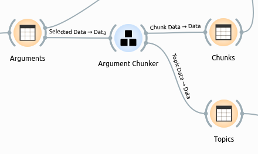
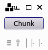
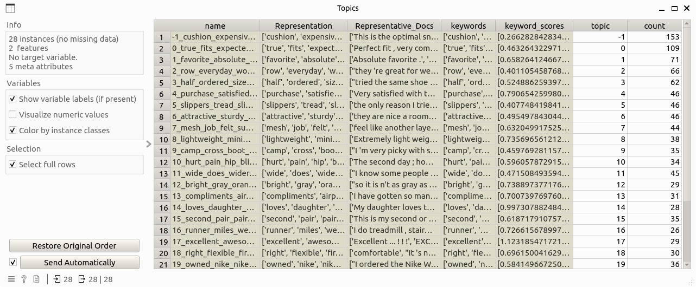
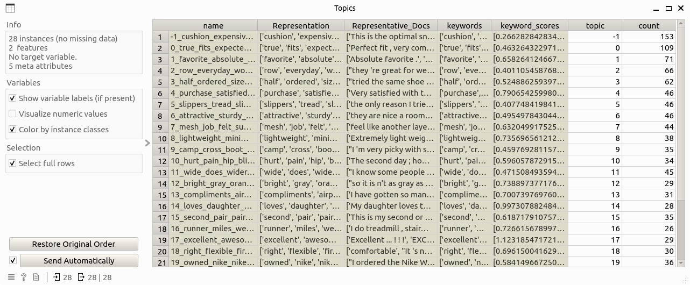

Argument Chunker
Segment text-based arguments, enable users to explore the thematic structure of the arguments and their underlying topics.
Signals
Inputs
Data: Data table that contains the argument-level information. This table must contain two columns: argument for argument text and score that is the corresponding overview score.
Outputs:
Chunk Data: Data table that contains information about argument chunks, including columns: chunk, argument_id, topic, rank, and polarity_score.Topic Data: Data table that contains information about topics of chunks, including columns: name, Representation, Representative_Docs, keywords, keyword_scores, topic, and count.
Description
Argument Chunker implements the following functions:
Chunking: Argument texts are first splitted into sentences, which will then be further parsed into chunks. Dependency parsing is chosen as the default parsing method here. A chunk corpus is generated as the result of this step, including chunk text and the corresponding argument id.
Topic modeling: Topic modeling is performed on the chunk corpus to learn the themes there. This process is implemented based on a BERT-based topic modeling approach in Python named BERTopic. To summarize this step in brief: chunks are first embedded as high-dimensional vectors through a pre-selected sentence-transformer model; then a dimensionality reduction algorithm is applied to reduce the dimension of the vectors for efficient computation; afterwards, chunks are clustered based on the corresponding vectors, with control of clustering outliers; and finally topics are generated on top of the clustering results.
Sentiment analysis: Each chunk will be calculated the sentiment (polarity) scores, while the definition of sentiment polarity and an example can be found here.
Chunk ranking: Chunks are ranked on the argument level, this means each chunk will be given a score of importance within the argument it belongs. This ranking is calculated through PageRank of chunks on their similarity network.
Control
(None)
Example
The following workflow shows how the argument chunker widget works:

where the input Arguments table looks like this:

Double-clicking on the widget will show the following subinterface:

After clicking the chunk button and wait for a while, and input table will be processed and two output tables are generated like this.
 
